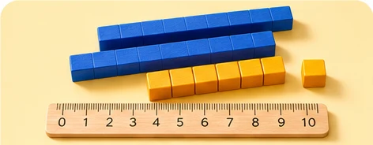
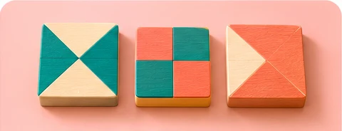

Full OC Mock Exams
Practise all three sections in one timed mock exam.
Your exam sections
Reading
Understand and interpret texts

Mathematical Reasoning
Solve problems with numbers

Thinking Skills
Spot patterns and follow clues